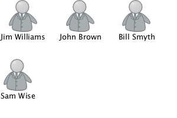
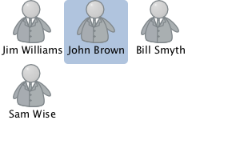
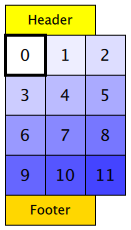
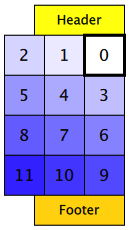
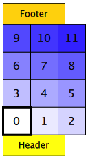
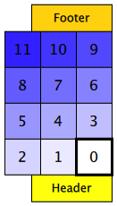
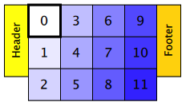
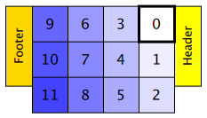
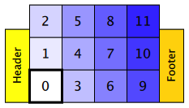
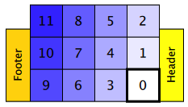

GridView QML Type
For specifying a grid view of items provided by a model. More...
| Import Statement: | import QtQuick |
| Inherits: |
Properties
- add : Transition
- addDisplaced : Transition
- cacheBuffer : int
- cellHeight : real
- cellWidth : real
- count : int
- currentIndex : int
- currentItem : Item
- delegate : Component
- displaced : Transition
- displayMarginBeginning : int
(since QtQuick 2.3) - displayMarginEnd : int
(since QtQuick 2.3) - effectiveLayoutDirection : enumeration
- flow : enumeration
- footer : Component
- footerItem : Item
- header : Component
- headerItem : Item
- highlight : Component
- highlightFollowsCurrentItem : bool
- highlightItem : Item
- highlightMoveDuration : int
- highlightRangeMode : enumeration
- keyNavigationEnabled : bool
- keyNavigationWraps : bool
- layoutDirection : enumeration
- model : model
- move : Transition
- moveDisplaced : Transition
- populate : Transition
- preferredHighlightBegin : real
- preferredHighlightEnd : real
- remove : Transition
- removeDisplaced : Transition
- snapMode : enumeration
- verticalLayoutDirection : enumeration
Attached Properties
- delayRemove : bool
- isCurrentItem : bool
- view : GridView
Attached Signals
Methods
- forceLayout()
- int indexAt(real x, real y)
- Item itemAt(real x, real y)
- Item itemAtIndex(int index)
- moveCurrentIndexDown()
- moveCurrentIndexLeft()
- moveCurrentIndexRight()
- moveCurrentIndexUp()
- positionViewAtBeginning()
- positionViewAtEnd()
- positionViewAtIndex(int index, PositionMode mode)
Detailed Description
A GridView displays data from models created from built-in QML types like ListModel and XmlListModel, or custom model classes defined in C++ that inherit from QAbstractListModel.
A GridView has a model, which defines the data to be displayed, and a delegate, which defines how the data should be displayed. Items in a GridView are laid out horizontally or vertically. Grid views are inherently flickable as GridView inherits from Flickable.
Example Usage
The following example shows the definition of a simple list model defined in a file called ContactModel.qml:
import QtQuick ListModel { ListElement { name: "Jim Williams" portrait: "pics/portrait.png" } ListElement { name: "John Brown" portrait: "pics/portrait.png" } ListElement { name: "Bill Smyth" portrait: "pics/portrait.png" } ListElement { name: "Sam Wise" portrait: "pics/portrait.png" } }

This model can be referenced as ContactModel in other QML files. See QML Modules for more information about creating reusable components like this.
Another component can display this model data in a GridView, as in the following example, which creates a ContactModel component for its model, and a Column (containing Image and Text items) for its delegate.
import QtQuick GridView { width: 300; height: 200 model: ContactModel {} delegate: Column { Image { source: portrait; anchors.horizontalCenter: parent.horizontalCenter } Text { text: name; anchors.horizontalCenter: parent.horizontalCenter } } }

The view will create a new delegate for each item in the model. Note that the delegate is able to access the model's name and portrait data directly.
An improved grid view is shown below. The delegate is visually improved and is moved into a separate contactDelegate component.
Rectangle { width: 300; height: 200 Component { id: contactDelegate Item { width: grid.cellWidth; height: grid.cellHeight Column { anchors.fill: parent Image { source: portrait; anchors.horizontalCenter: parent.horizontalCenter } Text { text: name; anchors.horizontalCenter: parent.horizontalCenter } } } } GridView { id: grid anchors.fill: parent cellWidth: 80; cellHeight: 80 model: ContactModel {} delegate: contactDelegate highlight: Rectangle { color: "lightsteelblue"; radius: 5 } focus: true } }
The currently selected item is highlighted with a blue Rectangle using the highlight property, and focus is set to true to enable keyboard navigation for the grid view. The grid view itself is a focus scope (see Keyboard Focus in Qt Quick for more details).
Delegates are instantiated as needed and may be destroyed at any time. State should never be stored in a delegate.
GridView attaches a number of properties to the root item of the delegate, for example GridView.isCurrentItem. In the following example, the root delegate item can access this attached property directly as GridView.isCurrentItem, while the child contactInfo object must refer to this property as wrapper.GridView.isCurrentItem.
GridView { width: 300; height: 200 cellWidth: 80; cellHeight: 80 Component { id: contactsDelegate Rectangle { id: wrapper width: 80 height: 80 color: GridView.isCurrentItem ? "black" : "red" Text { id: contactInfo text: name + ": " + number color: wrapper.GridView.isCurrentItem ? "red" : "black" } } } model: ContactModel {} delegate: contactsDelegate focus: true }
Note: Views do not set the clip property automatically. If the view is not clipped by another item or the screen, it will be necessary to set this property to true in order to clip the items that are partially or fully outside the view.
GridView Layouts
The layout of the items in a GridView can be controlled by these properties:
- flow - controls whether items flow from left to right (as a series of rows) or from top to bottom (as a series of columns). This value can be either GridView.FlowLeftToRight or GridView.FlowTopToBottom.
- layoutDirection - controls the horizontal layout direction: that is, whether items are laid out from the left side of the view to the right, or vice-versa. This value can be either Qt.LeftToRight or Qt.RightToLeft.
- verticalLayoutDirection - controls the vertical layout direction: that is, whether items are laid out from the top of the view down towards the bottom of the view, or vice-versa. This value can be either GridView.TopToBottom or GridView.BottomToTop.
By default, a GridView flows from left to right, and items are laid out from left to right horizontally, and from top to bottom vertically.
These properties can be combined to produce a variety of layouts, as shown in the table below. The GridViews in the first row all have a flow value of GridView.FlowLeftToRight, but use different combinations of horizontal and vertical layout directions (specified by layoutDirection and verticalLayoutDirection respectively). Similarly, the GridViews in the second row below all have a flow value of GridView.FlowTopToBottom, but use different combinations of horizontal and vertical layout directions to lay out their items in different ways.
| GridViews with GridView.FlowLeftToRight flow | |||
|---|---|---|---|
| (H) Left to right (V) Top to bottom  | (H) Right to left (V) Top to bottom  | (H) Left to right (V) Bottom to top  | (H) Right to left (V) Bottom to top  |
| GridViews with GridView.FlowTopToBottom flow | |||
| (H) Left to right (V) Top to bottom  | (H) Right to left (V) Top to bottom  | (H) Left to right (V) Bottom to top  | (H) Right to left (V) Bottom to top  |
See also QML Data Models, ListView, PathView, and Qt Quick Examples - Views.
Property Documentation
The currentIndex property holds the index of the current item, and currentItem holds the current item. Setting the currentIndex to -1 will clear the highlight and set currentItem to null.
If highlightFollowsCurrentItem is true, setting either of these properties will smoothly scroll the GridView so that the current item becomes visible.
Note that the position of the current item may only be approximate until it becomes visible in the view.
highlightRangeMode : enumeration |
preferredHighlightBegin : real |
preferredHighlightEnd : real |
These properties define the preferred range of the highlight (for the current item) within the view. The preferredHighlightBegin value must be less than the preferredHighlightEnd value.
These properties affect the position of the current item when the view is scrolled. For example, if the currently selected item should stay in the middle of the view when it is scrolled, set the preferredHighlightBegin and preferredHighlightEnd values to the top and bottom coordinates of where the middle item would be. If the currentItem is changed programmatically, the view will automatically scroll so that the current item is in the middle of the view. Furthermore, the behavior of the current item index will occur whether or not a highlight exists.
Valid values for highlightRangeMode are:
| Constant | Description |
|---|---|
GridView.ApplyRange | the view attempts to maintain the highlight within the range. However, the highlight can move outside of the range at the ends of the view or due to mouse interaction. |
GridView.StrictlyEnforceRange | the highlight never moves outside of the range. The current item changes if a keyboard or mouse action would cause the highlight to move outside of the range. |
GridView.NoHighlightRange | the default value |
This property allows delegates to be displayed outside of the view geometry.
If this value is non-zero, the view will create extra delegates before the start of the view, or after the end. The view will create as many delegates as it can fit into the pixel size specified.
For example, if in a vertical view the delegate is 20 pixels high, there are 3 columns, and displayMarginBeginning and displayMarginEnd are both set to 40, then 6 delegates above and 6 delegates below will be created and shown.
The default value is 0.
This property is meant for allowing certain UI configurations, and not as a performance optimization. If you wish to create delegates outside of the view geometry for performance reasons, you probably want to use the cacheBuffer property instead.
This QML property was introduced in QtQuick 2.3.
These properties holds the width and height of each cell in the grid.
The default cell size is 100x100.
add : Transition |
This property holds the transition to apply to items that are added to the view.
For example, here is a view that specifies such a transition:
GridView {
...
add: Transition {
NumberAnimation { properties: "x,y"; from: 100; duration: 1000 }
}
}
Whenever an item is added to the above view, the item will be animated from the position (100,100) to its final x,y position within the view, over one second. The transition only applies to the new items that are added to the view; it does not apply to the items below that are displaced by the addition of the new items. To animate the displaced items, set the displaced or addDisplaced properties.
For more details and examples on how to use view transitions, see the ViewTransition documentation.
Note: This transition is not applied to the items that are created when the view is initially populated, or when the view's model changes. (In those cases, the populate transition is applied instead.) Additionally, this transition should not animate the height of the new item; doing so will cause any items beneath the new item to be laid out at the wrong position. Instead, the height can be animated within the onAdd handler in the delegate.
See also addDisplaced, populate, and ViewTransition.
addDisplaced : Transition |
This property holds the transition to apply to items within the view that are displaced by the addition of other items to the view.
For example, here is a view that specifies such a transition:
GridView {
...
addDisplaced: Transition {
NumberAnimation { properties: "x,y"; duration: 1000 }
}
}
Whenever an item is added to the above view, all items beneath the new item are displaced, causing them to move down (or sideways, if horizontally orientated) within the view. As this displacement occurs, the items' movement to their new x,y positions within the view will be animated by a NumberAnimation over one second, as specified. This transition is not applied to the new item that has been added to the view; to animate the added items, set the add property.
If an item is displaced by multiple types of operations at the same time, it is not defined as to whether the addDisplaced, moveDisplaced or removeDisplaced transition will be applied. Additionally, if it is not necessary to specify different transitions depending on whether an item is displaced by an add, move or remove operation, consider setting the displaced property instead.
For more details and examples on how to use view transitions, see the ViewTransition documentation.
Note: This transition is not applied to the items that are created when the view is initially populated, or when the view's model changes. In those cases, the populate transition is applied instead.
See also displaced, add, populate, and ViewTransition.
cacheBuffer : int |
This property determines whether delegates are retained outside the visible area of the view.
If this value is greater than zero, the view may keep as many delegates instantiated as will fit within the buffer specified. For example, if in a vertical view the delegate is 20 pixels high, there are 3 columns and cacheBuffer is set to 40, then up to 6 delegates above and 6 delegates below the visible area may be created/retained. The buffered delegates are created asynchronously, allowing creation to occur across multiple frames and reducing the likelihood of skipping frames. In order to improve painting performance delegates outside the visible area are not painted.
The default value of this property is platform dependent, but will usually be a value greater than zero. Negative values are ignored.
Note that cacheBuffer is not a pixel buffer - it only maintains additional instantiated delegates.
Note: Setting this property is not a replacement for creating efficient delegates. It can improve the smoothness of scrolling behavior at the expense of additional memory usage. The fewer objects and bindings in a delegate, the faster a view can be scrolled. It is important to realize that setting a cacheBuffer will only postpone issues caused by slow-loading delegates, it is not a solution for this scenario.
The cacheBuffer operates outside of any display margins specified by displayMarginBeginning or displayMarginEnd.
count : int |
This property holds the number of items in the view.
delegate : Component |
The delegate provides a template defining each item instantiated by the view. The index is exposed as an accessible index property. Properties of the model are also available depending upon the type of Data Model.
The number of objects and bindings in the delegate has a direct effect on the flicking performance of the view. If at all possible, place functionality that is not needed for the normal display of the delegate in a Loader which can load additional components when needed.
The item size of the GridView is determined by cellHeight and cellWidth. It will not resize the items based on the size of the root item in the delegate.
The default stacking order of delegate instances is 1.
Note: Delegates are instantiated as needed and may be destroyed at any time. State should never be stored in a delegate.
displaced : Transition |
This property holds the generic transition to apply to items that have been displaced by any model operation that affects the view.
This is a convenience for specifying a generic transition for items that are displaced by add, move or remove operations, without having to specify the individual addDisplaced, moveDisplaced and removeDisplaced properties. For example, here is a view that specifies a displaced transition:
GridView {
...
displaced: Transition {
NumberAnimation { properties: "x,y"; duration: 1000 }
}
}
When any item is added, moved or removed within the above view, the items below it are displaced, causing them to move down (or sideways, if horizontally orientated) within the view. As this displacement occurs, the items' movement to their new x,y positions within the view will be animated by a NumberAnimation over one second, as specified.
If a view specifies this generic displaced transition as well as a specific addDisplaced, moveDisplaced or removeDisplaced transition, the more specific transition will be used instead of the generic displaced transition when the relevant operation occurs, providing that the more specific transition has not been disabled (by setting enabled to false). If it has indeed been disabled, the generic displaced transition is applied instead.
For more details and examples on how to use view transitions, see the ViewTransition documentation.
See also addDisplaced, moveDisplaced, removeDisplaced, and ViewTransition.
effectiveLayoutDirection : enumeration |
This property holds the effective layout direction of the grid.
When using the attached property LayoutMirroring::enabled for locale layouts, the visual layout direction of the grid will be mirrored. However, the property layoutDirection will remain unchanged.
See also GridView::layoutDirection and LayoutMirroring.
flow : enumeration |
This property holds the flow of the grid.
Possible values:
| Constant | Description |
|---|---|
GridView.FlowLeftToRight | (default) Items are laid out from left to right, and the view scrolls vertically |
GridView.FlowTopToBottom | Items are laid out from top to bottom, and the view scrolls horizontally |
footer : Component |
This property holds the component to use as the footer.
An instance of the footer component is created for each view. The footer is positioned at the end of the view, after any items. The default stacking order of the footer is 1.
See also header and footerItem.
footerItem : Item |
This holds the footer item created from the footer component.
An instance of the footer component is created for each view. The footer is positioned at the end of the view, after any items. The default stacking order of the footer is 1.
See also footer and headerItem.
header : Component |
This property holds the component to use as the header.
An instance of the header component is created for each view. The header is positioned at the beginning of the view, before any items. The default stacking order of the header is 1.
See also footer and headerItem.
headerItem : Item |
This holds the header item created from the header component.
An instance of the header component is created for each view. The header is positioned at the beginning of the view, before any items. The default stacking order of the header is 1.
See also header and footerItem.
highlight : Component |
This property holds the component to use as the highlight.
An instance of the highlight component is created for each view. The geometry of the resulting component instance will be managed by the view so as to stay with the current item, unless the highlightFollowsCurrentItem property is false. The default stacking order of the highlight item is 0.
See also highlightItem and highlightFollowsCurrentItem.
highlightFollowsCurrentItem : bool |
This property sets whether the highlight is managed by the view.
If this property is true (the default value), the highlight is moved smoothly to follow the current item. Otherwise, the highlight is not moved by the view, and any movement must be implemented by the highlight.
Here is a highlight with its motion defined by a SpringAnimation item:
Component { id: highlight Rectangle { width: view.cellWidth; height: view.cellHeight color: "lightsteelblue"; radius: 5 x: view.currentItem.x y: view.currentItem.y Behavior on x { SpringAnimation { spring: 3; damping: 0.2 } } Behavior on y { SpringAnimation { spring: 3; damping: 0.2 } } } } GridView { id: view width: 300; height: 200 cellWidth: 80; cellHeight: 80 model: ContactModel {} delegate: Column { Image { source: portrait; anchors.horizontalCenter: parent.horizontalCenter } Text { text: name; anchors.horizontalCenter: parent.horizontalCenter } } highlight: highlight highlightFollowsCurrentItem: false focus: true }
highlightItem : Item |
This holds the highlight item created from the highlight component.
The highlightItem is managed by the view unless highlightFollowsCurrentItem is set to false. The default stacking order of the highlight item is 0.
See also highlight and highlightFollowsCurrentItem.
highlightMoveDuration : int |
This property holds the move animation duration of the highlight delegate.
highlightFollowsCurrentItem must be true for this property to have effect.
The default value for the duration is 150ms.
See also highlightFollowsCurrentItem.
keyNavigationEnabled : bool |
This property holds whether the key navigation of the grid is enabled.
If this is true, the user can navigate the view with a keyboard. It is useful for applications that need to selectively enable or disable mouse and keyboard interaction.
By default, the value of this property is bound to interactive to ensure behavior compatibility for existing applications. When explicitly set, it will cease to be bound to the interactive property.
See also interactive.
keyNavigationWraps : bool |
This property holds whether the grid wraps key navigation
If this is true, key navigation that would move the current item selection past one end of the view instead wraps around and moves the selection to the other end of the view.
By default, key navigation is not wrapped.
layoutDirection : enumeration |
This property holds the layout direction of the grid.
Possible values:
| Constant | Description |
|---|---|
Qt.LeftToRight | (default) Items will be laid out starting in the top, left corner. The flow is dependent on the GridView::flow property. |
Qt.RightToLeft | Items will be laid out starting in the top, right corner. The flow is dependent on the GridView::flow property. |
Note: If GridView::flow is set to GridView.FlowLeftToRight, this is not to be confused if GridView::layoutDirection is set to Qt.RightToLeft. The GridView.FlowLeftToRight flow value simply indicates that the flow is horizontal.
See also GridView::effectiveLayoutDirection and GridView::verticalLayoutDirection.
model : model |
This property holds the model providing data for the grid.
The model provides the set of data that is used to create the items in the view. Models can be created directly in QML using ListModel, DelegateModel, ObjectModel, or provided by C++ model classes. If a C++ model class is used, it must be a subclass of QAbstractItemModel or a simple list.
See also Data Models.
move : Transition |
This property holds the transition to apply to items in the view that are being moved due to a move operation in the view's model.
For example, here is a view that specifies such a transition:
GridView {
...
move: Transition {
NumberAnimation { properties: "x,y"; duration: 1000 }
}
}
Whenever the model performs a move operation to move a particular set of indexes, the respective items in the view will be animated to their new positions in the view over one second. The transition only applies to the items that are the subject of the move operation in the model; it does not apply to items below them that are displaced by the move operation. To animate the displaced items, set the displaced or moveDisplaced properties.
For more details and examples on how to use view transitions, see the ViewTransition documentation.
See also moveDisplaced and ViewTransition.
moveDisplaced : Transition |
This property holds the transition to apply to items that are displaced by a move operation in the view's model.
For example, here is a view that specifies such a transition:
GridView {
...
moveDisplaced: Transition {
NumberAnimation { properties: "x,y"; duration: 1000 }
}
}
Whenever the model performs a move operation to move a particular set of indexes, the items between the source and destination indexes of the move operation are displaced, causing them to move upwards or downwards (or sideways, if horizontally orientated) within the view. As this displacement occurs, the items' movement to their new x,y positions within the view will be animated by a NumberAnimation over one second, as specified. This transition is not applied to the items that are the actual subjects of the move operation; to animate the moved items, set the move property.
If an item is displaced by multiple types of operations at the same time, it is not defined as to whether the addDisplaced, moveDisplaced or removeDisplaced transition will be applied. Additionally, if it is not necessary to specify different transitions depending on whether an item is displaced by an add, move or remove operation, consider setting the displaced property instead.
For more details and examples on how to use view transitions, see the ViewTransition documentation.
See also displaced, move, and ViewTransition.
populate : Transition |
This property holds the transition to apply to the items that are initially created for a view.
It is applied to all items that are created when:
- The view is first created
- The view's model changes in such a way that the visible delegates are completely replaced
- The view's model is reset, if the model is a QAbstractItemModel subclass
For example, here is a view that specifies such a transition:
GridView {
...
populate: Transition {
NumberAnimation { properties: "x,y"; duration: 1000 }
}
}
When the view is initialized, the view will create all the necessary items for the view, then animate them to their correct positions within the view over one second.
However when scrolling the view later, the populate transition does not run, even though delegates are being instantiated as they become visible. When the model changes in a way that new delegates become visible, the add transition is the one that runs. So you should not depend on the populate transition to initialize properties in the delegate, because it does not apply to every delegate. If your animation sets the to value of a property, the property should initially have the to value, and the animation should set the from value in case it is animated:
GridView {
...
delegate: Rectangle {
opacity: 1 // not necessary because it's the default; but don't set 0
...
}
populate: Transition {
NumberAnimation { property: "opacity"; from: 0; to: 1; duration: 1000 }
}
}
For more details and examples on how to use view transitions, see the ViewTransition documentation.
See also add and ViewTransition.
remove : Transition |
This property holds the transition to apply to items that are removed from the view.
For example, here is a view that specifies such a transition:
GridView {
...
remove: Transition {
ParallelAnimation {
NumberAnimation { property: "opacity"; to: 0; duration: 1000 }
NumberAnimation { properties: "x,y"; to: 100; duration: 1000 }
}
}
}
Whenever an item is removed from the above view, the item will be animated to the position (100,100) over one second, and in parallel will also change its opacity to 0. The transition only applies to the items that are removed from the view; it does not apply to the items below them that are displaced by the removal of the items. To animate the displaced items, set the displaced or removeDisplaced properties.
Note that by the time the transition is applied, the item has already been removed from the model; any references to the model data for the removed index will not be valid.
Additionally, if the delayRemove attached property has been set for a delegate item, the remove transition will not be applied until delayRemove becomes false again.
For more details and examples on how to use view transitions, see the ViewTransition documentation.
See also removeDisplaced and ViewTransition.
removeDisplaced : Transition |
This property holds the transition to apply to items in the view that are displaced by the removal of other items in the view.
For example, here is a view that specifies such a transition:
GridView {
...
removeDisplaced: Transition {
NumberAnimation { properties: "x,y"; duration: 1000 }
}
}
Whenever an item is removed from the above view, all items beneath it are displaced, causing them to move upwards (or sideways, if horizontally orientated) within the view. As this displacement occurs, the items' movement to their new x,y positions within the view will be animated by a NumberAnimation over one second, as specified. This transition is not applied to the item that has actually been removed from the view; to animate the removed items, set the remove property.
If an item is displaced by multiple types of operations at the same time, it is not defined as to whether the addDisplaced, moveDisplaced or removeDisplaced transition will be applied. Additionally, if it is not necessary to specify different transitions depending on whether an item is displaced by an add, move or remove operation, consider setting the displaced property instead.
For more details and examples on how to use view transitions, see the ViewTransition documentation.
See also displaced, remove, and ViewTransition.
snapMode : enumeration |
This property determines how the view scrolling will settle following a drag or flick. The possible values are:
| Constant | Description |
|---|---|
GridView.NoSnap | (default) the view stops anywhere within the visible area. |
GridView.SnapToRow | the view settles with a row (or column for GridView.FlowTopToBottom flow) aligned with the start of the view. |
GridView.SnapOneRow | the view will settle no more than one row (or column for GridView.FlowTopToBottom flow) away from the first visible row at the time the mouse button is released. This mode is particularly useful for moving one page at a time. |
verticalLayoutDirection : enumeration |
This property holds the vertical layout direction of the grid.
Possible values:
| Constant | Description |
|---|---|
GridView.TopToBottom | (default) Items are laid out from the top of the view down to the bottom of the view. |
GridView.BottomToTop | Items are laid out from the bottom of the view up to the top of the view. |
See also GridView::layoutDirection.
Attached Property Documentation
GridView.delayRemove : bool |
This attached property holds whether the delegate may be destroyed. It is attached to each instance of the delegate. The default value is false.
It is sometimes necessary to delay the destruction of an item until an animation completes. The example delegate below ensures that the animation completes before the item is removed from the list.
Component { id: delegate Item { GridView.onRemove: SequentialAnimation { PropertyAction { target: wrapper; property: "GridView.delayRemove"; value: true } NumberAnimation { target: wrapper; property: "scale"; to: 0; duration: 250; easing.type: Easing.InOutQuad } PropertyAction { target: wrapper; property: "GridView.delayRemove"; value: false } } } }
If a remove transition has been specified, it will not be applied until delayRemove is returned to false.
GridView.isCurrentItem : bool |
This attached property is true if this delegate is the current item; otherwise false.
It is attached to each instance of the delegate.
GridView { width: 300; height: 200 cellWidth: 80; cellHeight: 80 Component { id: contactsDelegate Rectangle { id: wrapper width: 80 height: 80 color: GridView.isCurrentItem ? "black" : "red" Text { id: contactInfo text: name + ": " + number color: wrapper.GridView.isCurrentItem ? "red" : "black" } } } model: ContactModel {} delegate: contactsDelegate focus: true }
GridView.view : GridView |
This attached property holds the view that manages this delegate instance.
It is attached to each instance of the delegate and also to the header, the footer and the highlight delegates.
Attached Signal Documentation
add() |
This attached signal is emitted immediately after an item is added to the view.
Note: The corresponding handler is onAdd.
remove() |
This attached signal is emitted immediately before an item is removed from the view.
If a remove transition has been specified, it is applied after this signal is handled, providing that delayRemove is false.
Note: The corresponding handler is onRemove.
Method Documentation
positionViewAtBeginning() |
positionViewAtEnd() |
Positions the view at the beginning or end, taking into account any header or footer.
It is not recommended to use contentX or contentY to position the view at a particular index. This is unreliable since removing items from the start of the list does not cause all other items to be repositioned, and because the actual start of the view can vary based on the size of the delegates.
Note: methods should only be called after the Component has completed. To position the view at startup, this method should be called by Component.onCompleted. For example, to position the view at the end on startup:
Component.onCompleted: positionViewAtEnd()
forceLayout() |
Responding to changes in the model is usually batched to happen only once per frame. This means that inside script blocks it is possible for the underlying model to have changed, but the GridView has not caught up yet.
This method forces the GridView to immediately respond to any outstanding changes in the model.
Note: methods should only be called after the Component has completed.
Returns the index of the visible item containing the point x, y in content item coordinates. If there is no item at the point specified, or the item is not visible -1 is returned.
If the item is outside the visible area, -1 is returned, regardless of whether an item will exist at that point when scrolled into view.
Note: if you add a MouseArea as a child of the GridView, it will return positions in GridView coordinates rather than content item coordinates. To use those positions in a call to this function, you need to map them first:
GridView { id: view MouseArea { anchors.fill: parent onClicked: (mouse) => { let posInGridView = Qt.point(mouse.x, mouse.y) let posInContentItem = mapToItem(view.contentItem, posInGridView) let index = view.indexAt(posInContentItem.x, posInContentItem.y) } } }
Note: methods should only be called after the Component has completed.
See also itemAt.
Returns the visible item containing the point x, y in content item coordinates. If there is no item at the point specified, or the item is not visible null is returned.
If the item is outside the visible area, null is returned, regardless of whether an item will exist at that point when scrolled into view.
Note: methods should only be called after the Component has completed.
See also indexAt.
Returns the item for index. If there is no item for that index, for example because it has not been created yet, or because it has been panned out of the visible area and removed from the cache, null is returned.
Note: this method should only be called after the Component has completed. The returned value should also not be stored since it can turn to null as soon as control goes out of the calling scope, if the view releases that item.
moveCurrentIndexDown() |
Move the currentIndex down one item in the view. The current index will wrap if keyNavigationWraps is true and it is currently at the end. This method has no effect if the count is zero.
Note: methods should only be called after the Component has completed.
moveCurrentIndexLeft() |
Move the currentIndex left one item in the view. The current index will wrap if keyNavigationWraps is true and it is currently at the end. This method has no effect if the count is zero.
Note: methods should only be called after the Component has completed.
moveCurrentIndexRight() |
Move the currentIndex right one item in the view. The current index will wrap if keyNavigationWraps is true and it is currently at the end. This method has no effect if the count is zero.
Note: methods should only be called after the Component has completed.
moveCurrentIndexUp() |
Move the currentIndex up one item in the view. The current index will wrap if keyNavigationWraps is true and it is currently at the end. This method has no effect if the count is zero.
Note: methods should only be called after the Component has completed.
positionViewAtIndex(int index, PositionMode mode) |
Positions the view such that the index is at the position specified by mode:
| Constant | Description |
|---|---|
GridView.Beginning | position item at the top (or left for GridView.FlowTopToBottom flow) of the view. |
GridView.Center | position item in the center of the view. |
GridView.End | position item at bottom (or right for horizontal orientation) of the view. |
GridView.Visible | if any part of the item is visible then take no action, otherwise bring the item into view. |
GridView.Contain | ensure the entire item is visible. If the item is larger than the view, the item is positioned at the top (or left for GridView.FlowTopToBottom flow) of the view. |
GridView.SnapPosition | position the item at preferredHighlightBegin. This mode is only valid if highlightRangeMode is StrictlyEnforceRange or snapping is enabled via snapMode. |
If positioning the view at the index would cause empty space to be displayed at the beginning or end of the view, the view will be positioned at the boundary.
It is not recommended to use contentX or contentY to position the view at a particular index. This is unreliable since removing items from the start of the view does not cause all other items to be repositioned. The correct way to bring an item into view is with positionViewAtIndex.
Note: methods should only be called after the Component has completed. To position the view at startup, this method should be called by Component.onCompleted. For example, to position the view at the end:
Component.onCompleted: positionViewAtIndex(count - 1, GridView.Beginning)